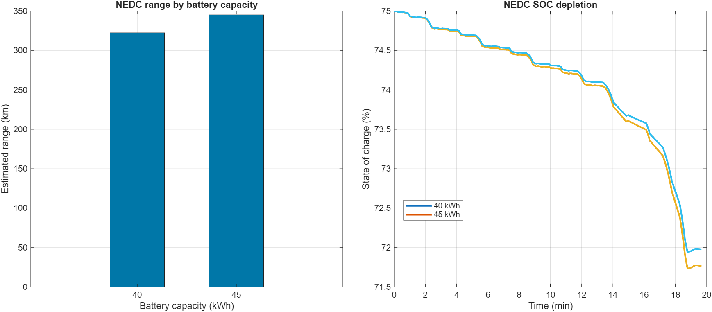

Size Battery Pack for Electric Vehicle
The battery is one of the most critical and expensive components on a BEV — it powers propulsion, HVAC, coolant pumps and heaters, and lighting. A larger pack improves range but adds weight, volume, cost, and packaging and safety constraints, and the extra mass itself eats into the range gain.
This workflow simulates candidate packs of different capacity and weight over the NEDC cycle and compares them on achieved range, so you can pick the smallest pack that meets the target range without an unnecessary mass penalty.
Quick Setup
- Open the workflow Live ScriptOpen Live Script
Open
BEVBatterySizingMain.mlxto compare candidate battery packs by range and vehicle mass over an NEDC cycle. - Use precomputed results or run the sweepOpen sizing runner
Review the shipped
NEDCsizingData.mat, or runBEVbatterySizingto regenerate the NEDC results. - Review the candidate pack casesOpen BEV system model
Compare the 40 kWh and 45 kWh packs at an initial SOC of 0.75, including their cell capacities, vehicle masses, and range.
- Run and read the energy breakdown
Compare range, SOC depletion, pack capacity, mass, and energy use. Results are saved to
NEDCsizingData.mat.
Key Models and Components
| Model or component | Role | Reference |
|---|---|---|
| VehicleElectroThermal template | Includes pack temperature and coolant behavior in the NEDC sweep. | View template |
| High-Voltage Battery | Varies pack capacity and mass between the 40 kWh and 45 kWh cases. | View component |
Expected Results

The workflow produces these result types:
- Range versus battery capacity
- Pack mass and capacity trade-off
- SOC depletion profiles for each candidate
Supporting Files
| Purpose | Artifact | Action |
|---|---|---|
| Main workflow | BEVBatterySizingMain.mlx | Open Live Script |
| Batch runner | BEVbatterySizing.m | Open file |
| Open helper | OpenBatterySizingLiveScript.m | Open file |
Checks Before Using Results
- The Live Script loads
NEDCsizingData.mat; runBEVbatterySizing.mto regenerate the detailed simulations. - Confirm the sizing script reports the intended NEDC case.
- Check that battery mass changes with capacity.
- Do not compare candidates that end on different stopping criteria.